검사 정렬과 유효 마스크
기준 격자에 맞춘 뒤 유효한 위치만 비교합니다.


그림을 읽는 순서
- Aligned는 GrayF64이고 ValidMask는 Gray8입니다.
- 25개 중 유효 20개는 유효 비율 0.8입니다.
동작의 원리
정렬 결과와 유효 마스크는 같은 기준 격자에 놓입니다.
입력과 결과의 의미
InspectionRect 는 영상 로컬의 왼쪽 위와 너비·높이이며 끝 좌표는 제외합니다. 정렬 입력은 Gray8, Gray16, GrayF32이고 혼합 가능합니다. 기준 ROI는 양의 크기로 기준 영상 안에 있어야 하며 NCC 학습 영역에 밝기 변화가 필요합니다. 출력 Aligned 는 기준 격자와 원점의 GrayF64, ValidMask 는 같은 격자의 Gray8입니다. 변환 ReferenceToInspection 은 기준 전역 좌표에서 검사 전역 좌표로 갑니다. 결과와 얻은 영상 각각을 해제하세요.
좌표와 수명 · 검사 프레임워크에서 설정과 실제 API를 이어서 확인할 수 있습니다.
적용할 때 확인할 점
기준 격자에 맞춘 뒤 유효한 위치만 비교합니다. 그림의 화살표는 여기에서 설명하는 데이터 또는 제어 관계를 나타냅니다. 실제 호출에서 사용할 수 있는 입력 형식과 반환 객체는 연결된 API 문서의 선언과 파라미터 표를 확인하세요.